CASE STUDY 2025 | UI/UX DESIGN | SUSTAINABLE ROAD DEVELOPMENT WEBSITE
Reframing a sustainable infrastructure brand to communicate expertise, reliability, and long-term impact.
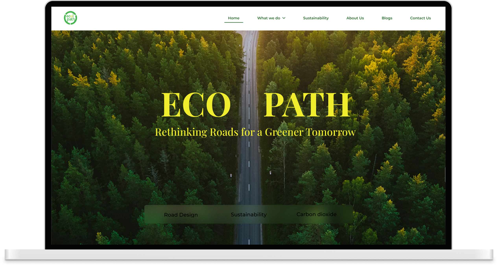
Ecopath did not have an existing website and needed a digital platform that could clearly communicate their services, showcase their range of road construction products, and establish credibility within the industry.
The primary goal of the project was to design a website that would highlight Ecopath’s expertise, showcase their achievements, and clearly explain their road-building process to potential clients while reinforcing their identity as a sustainable infrastructure provider.
Ecopath is a sustainable road infrastructure company focused on developing durable, environmentally responsible road construction solutions. It enhances traditional methods by integrating sustainable materials and processes, offering both construction services and a range of infrastructure products.
Industry
Sustainable Road Infrastructure Company.
Vibe
Reliable, Industrial, Sustainability-Focused.
Operating in a technical and trust-driven industry, Ecopath needed a way to communicate complex processes, products, and sustainability efforts without overwhelming users. The challenge was to transform this information into a structured, intuitive experience that simplifies understanding while reinforcing credibility and engagement.
Establishing a professional and trustworthy digital presence in a highly technical and credibility-driven domain.
Presenting both services and road construction products clearly without causing information overload.
Structuring complex information around processes and sustainability in a way that is easy to understand.
Designing navigation that remains simple and intuitive despite the breadth of content.
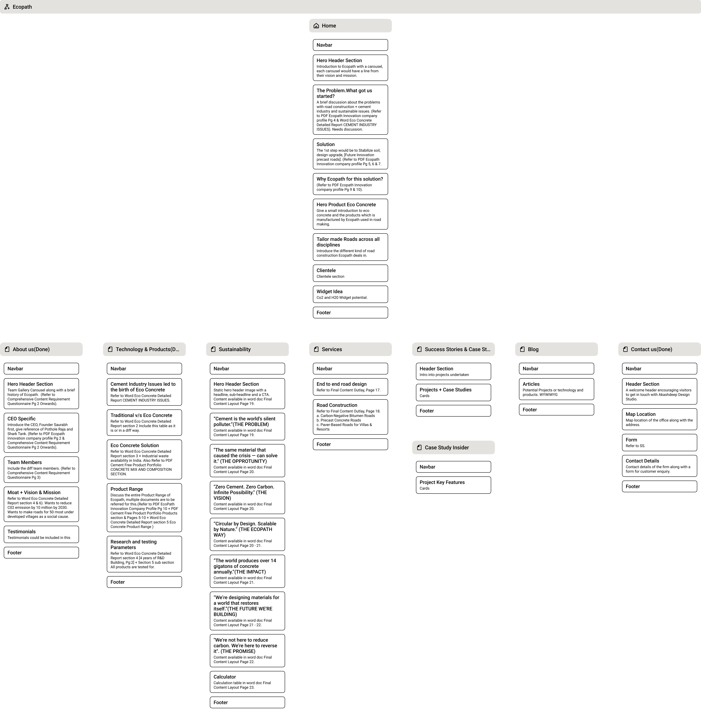
Establish a credible digital presence that reflects Ecopath’s expertise in sustainable infrastructure.
Present services and product offerings in a structured and easy-to-understand manner.
Showcase capabilities, achievements, and industry experience to build confidence among clients.
Design a seamless and well-structured navigation for effortless user exploration.
Simplify technical and process-driven information into clear, digestible content.
Page Name
Key Sections
Core Functionality
Home
Hero, Problem → Solution, Why Ecopath,
Products, Road Types, Clients
First impression, problem-solution narrative, primary navigation hub.
About Us
Leadership, Team, Vision, Testimonials
Build trust, showcase people & brand credibility.
Technology & Products
Eco Concrete, Comparison, Product Range,
R&D
Explain innovation, validate product strength.
Services
Road Design, Construction Types
Present core offerings clearly.
Projects
Projects, Case Cards
Showcase real work, build credibility.
Sustainability
Problem, Opportunity, Impact,
Vision, Calculator
Communicate sustainability story & environmental impact.
Blog
Articles, Insights
Thought leadership & knowledge sharing.
Contact
Header Section, Map Location, Contact Details,
Inquiry Form
Lead generation and physical company localization.
Typography System
Body Text Style
MONTSERRAT / 18PXMicrotext for labels
MONTSERRAT / 12PXColor System
Primary
#F6F6F6 (BG)
Secondary
#1B1B1B (TEXT)
Accent
#17411A (LOGO)
Shadow
#E6E6DF (SUPPORT)
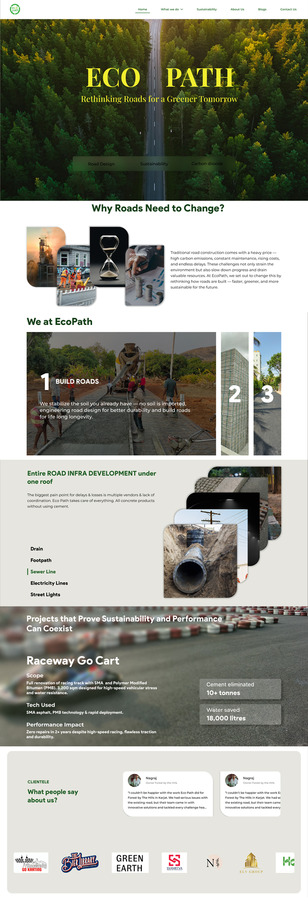
Design Considerations
The homepage was structured using a modular, section-based layout to organize high-density content into clear and scannable blocks. A strong visual hierarchy, balanced spacing, and minimal interactions ensure clarity, while maintaining a grounded and industrial visual tone.
User Experience Rationale
The design approach was driven by the need to simplify complex information without overwhelming users. A narrative flow guides users from understanding the problem to exploring solutions and finally building trust. Content is progressively revealed in digestible sections, aligning with natural reading patterns and supporting confident decision-making.
Design Considerations
A collage-based hero creates a distinctive and visually rich entry point. A vertical timeline provides a clear structure, guiding content in a continuous flow. Clean spacing, balanced typography, and subtle hover interactions on leadership cards add depth while maintaining a minimal and cohesive interface.
Behavioral Rationale
The design focuses on humanizing the brand by introducing people and stories early. The timeline guides users step by step, making information easier to process and remember. Interactive leadership cards encourage exploration, while articles add curiosity and extend engagement.
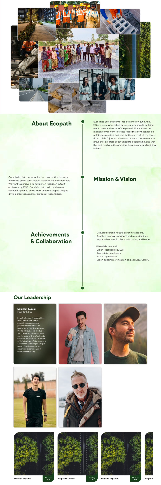
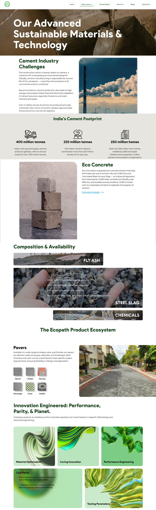
Experience Overview
This page presents Ecopath’s offerings in a structured and engaging way. The
challenge was to handle dense information while maintaining clarity.
The experience follows a narrative flow—starting with industry challenges, moving
through key data, and introducing Eco Concrete as the core solution. Sections like
composition, product range, and innovation are layered progressively, allowing users
to explore without feeling overwhelmed.
Design Considerations
A mix of structured and varied layouts helps manage dense content without visual fatigue. Data sections are designed for quick scanning, while process and composition use engaging layouts for better readability. The product range is shown in modular blocks to avoid a catalogue feel, and the innovation section uses adaptive bento layouts with abstract visuals for a modern touch.
Interaction Rationale
The page introduces complexity step by step—starting with context, then insights, and finally detailed information. Scannable sections support quick understanding, while deeper content caters to users seeking more detail. Visual variation and interaction help maintain attention across different user types.
Design Considerations
A clean and minimal layout keeps the experience light and easy to scan. Consistent section structures maintain visual continuity, while milestones add credibility. Service categories are supported with imagery and interactive layouts to make technical content more engaging.
Experience Strategy
The page is intentionally simplified to reduce cognitive fatigue after high-density sections. Content is structured for quick understanding, while subtle interactions maintain engagement. This balance helps users evaluate services clearly without feeling overwhelmed.
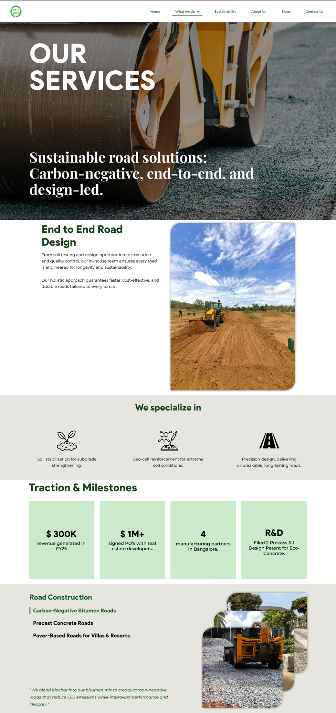
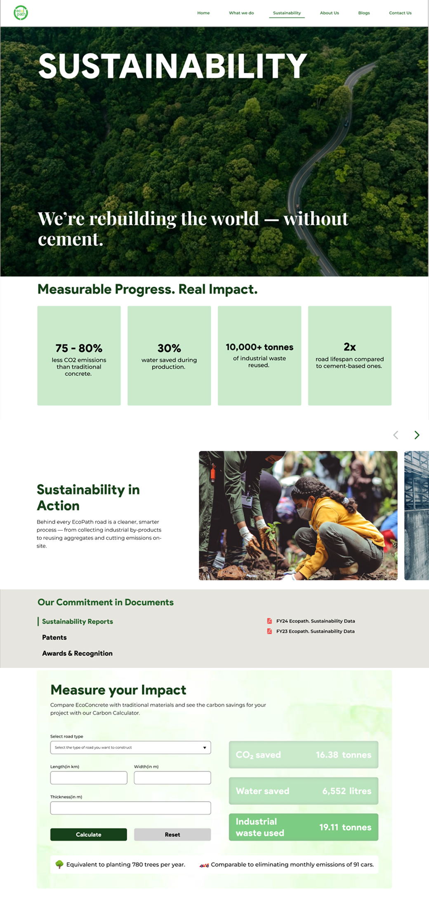
From ambiguity to clarity
With no predefined direction for sustainability, the page was shaped through design-led thinking—translating Ecopath’s vision into a clear, impact-driven narrative that was later validated by the client.
Design Considerations
A clean layout balances storytelling with data. Impact metrics are presented in simple, scannable blocks, while imagery and spacing maintain clarity. The calculator acts as a focused interaction point to showcase real-world impact.
Impact Flow
The page is designed to connect emotion with evidence—starting with a strong sustainability message and followed by measurable impact. Content flows from awareness to validation, helping users understand both the purpose and the results. Interactive elements like the calculator make the impact more tangible, encouraging deeper engagement.
Motion across the website is subtle and purposeful, used to support clarity and engagement without overwhelming the user. Interactions are designed to guide attention, add depth, and make dense content easier to explore.
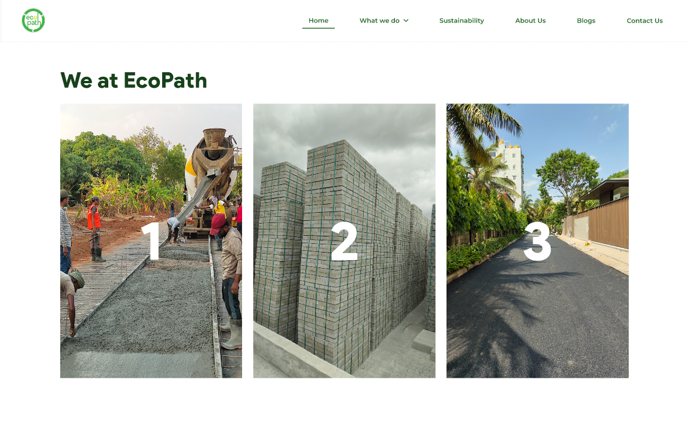
DYNAMIC CONTENT EMPHASIS
Layouts subtly shift on hover, bringing focus to selected content and making exploration more intuitive.
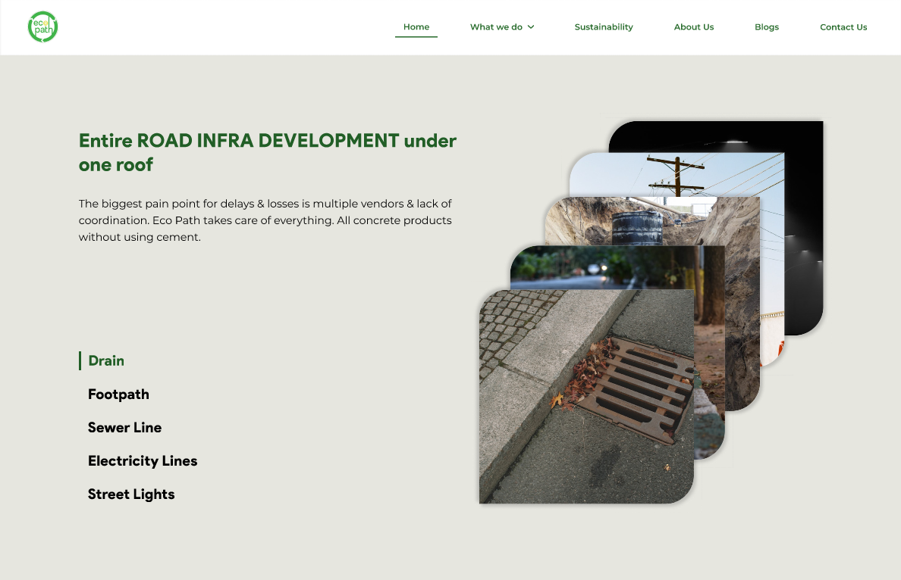
DYNAMIC CONTENT RESPONSE
Content updates dynamically with user selection, aligning text and visuals for clearer understanding.
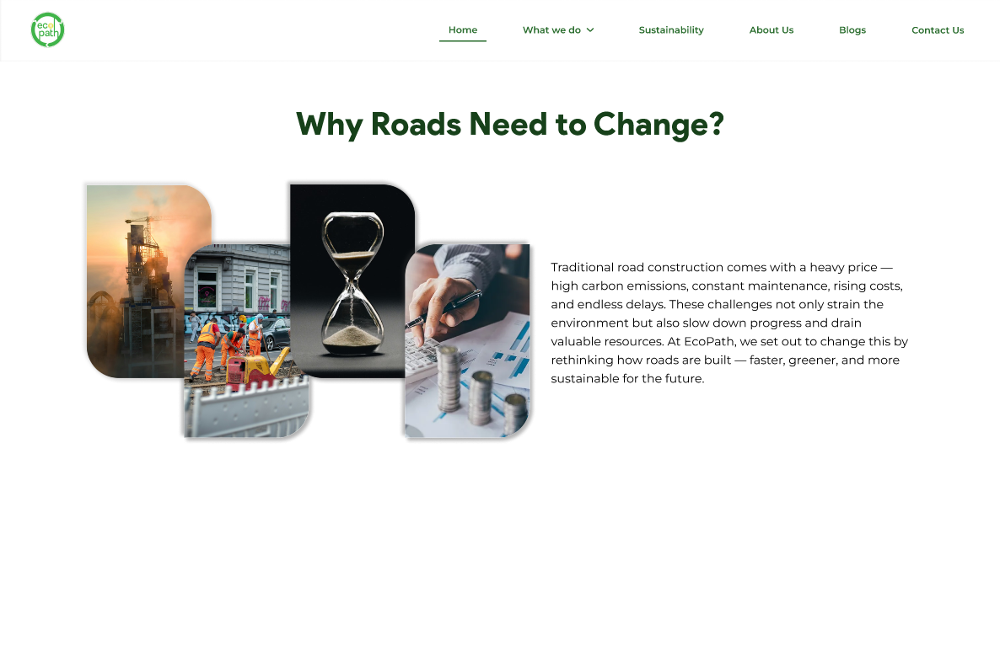
VISUAL HIERARCHY ON INTERACTION
Subtle hover effects highlight key elements and guide attention without disrupting the experience.
A desktop-first structure was followed, with layouts adapting fluidly across screen sizes during development. Content hierarchy and readability were maintained to ensure a consistent experience across devices.
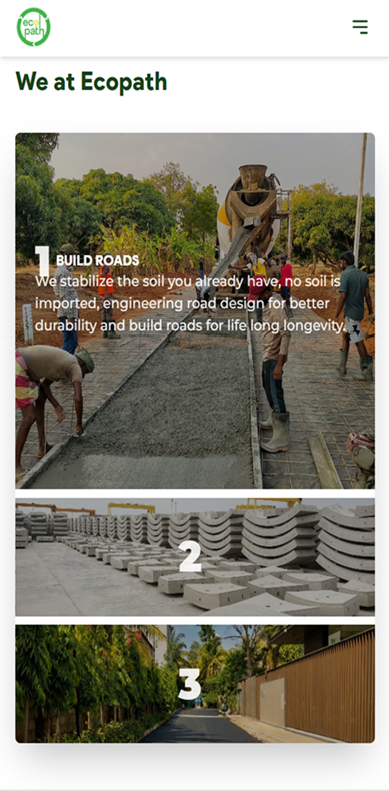
Simplified complex infrastructure concepts into clear, scannable content for better understanding.
Established Ecopath as a credible, sustainability-driven infrastructure provider.
Presented detailed information without overwhelming users, supporting both quick insights and deeper exploration.
Developed consistent layouts and interaction patterns, reinforcing a scalable design approach.
Balanced the needs of casual visitors and decision-makers through layered content.
“The platform clearly reflects our vision—structured, purposeful, and rooted in sustainability. It simplifies complex ideas and communicates our work with the clarity it deserves.”
Sourabh Kumar
Founder & CEO
“The experience strikes the right balance between technical depth and usability. It presents our innovations in a way that is both accessible and impactful.”
Abhishek Chazed
Co-Founder & CTO